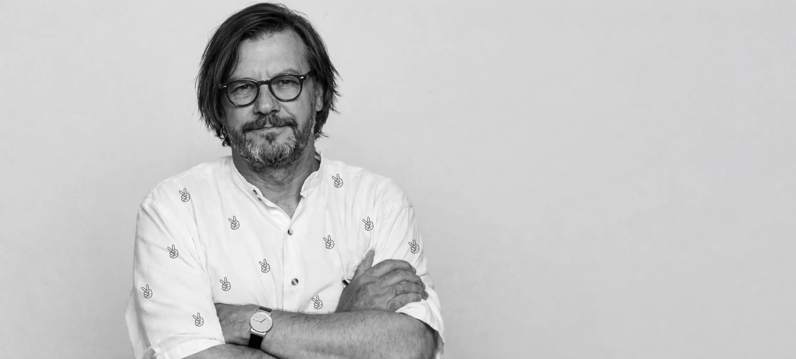
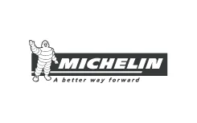
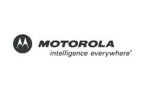
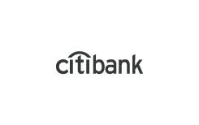
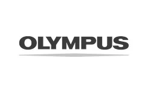
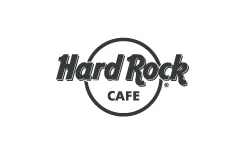

Grafik komputerowy & DTP Expert / Freelancer
TOMASZWROŃSKI.
Projektuję wizerunek firm.
Wspieram zespoły marketingu.
Przygotowuję materiały do druku.

01 / O mnie
Doświadczenie po obu stronach projektuw projektowaniu i produkcji
POMYSŁ TO
POCZĄTEK.
LICZY SIĘ EFEKT.
Od pierwszego logo do kolejnej kampanii.
Od koncepcji publikacji do plików dla drukarni.
Jestem Tomasz. Pracuję z małymi firmami, działami marketingu, agencjami i wydawnictwami. Łączę projektowanie z wiedzą o produkcji, żeby Twoje materiały były spójne i gotowe do wykorzystania.
Porozmawiajmy o Twoim projekcie02 / Obszary współpracy
Firma na starcie. Marketing w ruchu.DOBRY MOMENT
NA PROJEKT.
Budujesz wizerunek od podstaw albo szukasz wsparcia dla działającego zespołu. Pomagam w obu sytuacjach.
Branding / Marketing / DTP01Start i rozwój firmy
Pomagam nowym i rozwijającym się firmom przygotować spójny wizerunek oraz materiały potrzebne do wejścia na rynek i dalszej pracy.
Zapytaj o współpracę02Marketing i stała obsługa
Wspieram działy marketingu, brand managerów i firmy w codziennych zadaniach graficznych. Poznaję markę i pomagam zachować spójność od pierwszego pomysłu po ostatnią adaptację.
Zapytaj o współpracę03Branding i identyfikacja
Projektuję znak i system wizualny, z którego firma może korzystać na co dzień. Logo, kolory, typografia i materiały marki tworzą jedną całość.
Zapytaj o współpracę04Marketing i sprzedaż
Przygotowuję projekty, które wspierają komunikację i sprzedaż: od Key Visualu po folder, materiały targowe i reklamę w internecie.
Zapytaj o współpracę05DTP, publikacje i druk
Projektuję i składam publikacje wielostronicowe. Łączę dbałość o typografię i układ z doświadczeniem produkcyjnym — od katalogu i raportu po pliki gotowe dla drukarni.
Zapytaj o współpracę03 / Wybrane realizacje
Przewijaj, żeby zobaczyć kolejne pracePROJEKTY, KTÓRE MÓWIĄ.
6 realizacji
04 / Marki, z którymi pracowałem
Różne branże. Wspólny język projektu.




05 / Pytania o współpracę
JASNE ZASADY.
DOBRY POCZĄTEK.
01Czy współpracujesz z małymi firmami?
Tak. Pomagam firmom na starcie i tym, które działają od lat, ale potrzebują nowych materiałów lub uporządkowania identyfikacji. Możemy zacząć od pojedynczego projektu albo zaplanować cały zestaw.
02Czy możesz wspierać nasz marketing na stałe?
Tak. Mogę działać jako zewnętrzny grafik dla działu marketingu, firmy lub agencji. Zakres zadań, priorytety, sposób komunikacji i rozliczenie ustalamy przed rozpoczęciem współpracy.
03Czy zajmujesz się także DTP i drukiem?
Tak. Projektuję i składam publikacje oraz przygotowuję materiały do produkcji. DTP, prepress i doświadczenie w druku są ważną częścią mojej pracy.
04Czy pracujesz zdalnie?
Tak. Pracuję w Warszawie i zdalnie dla klientów z całej Polski. Brief, materiały i uwagi możemy wymieniać online.
05Co jest potrzebne do wyceny?
Krótki opis projektu, zakres materiałów, termin oraz posiadane pliki. Na tej podstawie określamy sposób pracy i wycenę. Jeśli nie wiesz jeszcze, czego potrzebujesz, zaczynamy od rozmowy.
06 / Z pracowni
Projektowanie z praktykiDOBRY PROJEKT
ZACZYNA SIĘ WCZEŚNIEJ.
Jak zaplanować katalog produktowy?
Od uporządkowanej oferty do czytelnej publikacji. O decyzjach, które warto podjąć przed składem.
Czytaj artykułJak przygotować projekt do druku?
Format, spady, kolory i finalny plik. Co sprawdzić, zanim materiały trafią do drukarni.
Czytaj artykułProjektowanie logo online
Jak przygotować się do współpracy z grafikiem i ustalić zakres projektu na odległość.
Czytaj artykułZaczynamy od rozmowy
Warszawa / cała Polska